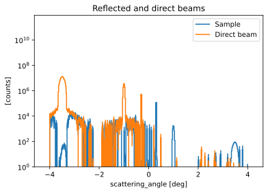
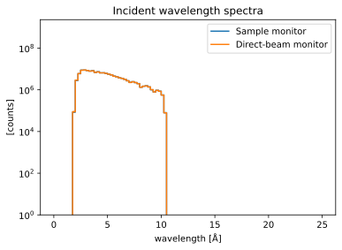
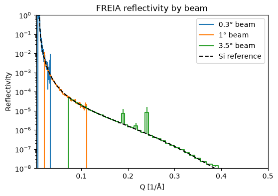
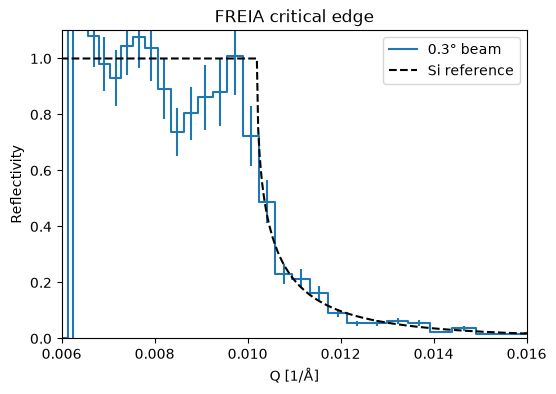

FREIA reflectivity reduction#
Compute one reflectivity curve for each incident beam using a sample measurement and a direct-beam measurement taken without a sample. Normalize by an incident wavelength monitor, select matching peaks, and compare the three curves with the silicon reflectivity reference.
The sample and direct-beam runs must have matching slit and chopper settings. This example downloads and caches sample and direct-beam runs using pooch (pip install pooch).
[1]:
import numpy as np
import plopp as pp
import scipp as sc
from ess.freia import FreiaMcStasWorkflow, data
from ess.freia.corrections import RunNormalization
from ess.freia.types import (
DetectorRegionOfInterest,
IncidentMonitor,
WavelengthMonitor,
)
from ess.reduce.nexus.types import NeXusName
from ess.reflectometry.types import (
BeamSize,
CorrectedDetector,
Filename,
QBins,
ReducibleData,
ReferenceRun,
ReflectivityOverQ,
Sample,
SampleRun,
SampleSize,
WavelengthBins,
)
Select the runs#
The workflow normalizes by the direct beam measurement and by a beam monitor. SampleLambda is a monitor in the McStas model that measures the wavelength spectrum before the sample. If no incident monitor is available, the monitor normalization can be skipped by using RunNormalization.none; the two runs must then already share an exposure and flux scale.
[2]:
workflow = FreiaMcStasWorkflow(run_norm=RunNormalization.monitor_histogram)
workflow[Filename[SampleRun]] = data.freia_mcstas_sample_run()
workflow[Filename[ReferenceRun]] = data.freia_mcstas_reference_run()
workflow[NeXusName[IncidentMonitor]] = 'SampleLambda'
workflow[WavelengthBins] = sc.linspace('wavelength', 2.0, 10.0, 81, unit='angstrom')
workflow[QBins] = sc.geomspace('Q', 0.003, 0.5, 151, unit='1/angstrom')
Downloading file 'mcstas-wfm-silicon.h5' from 'https://public.esss.dk/groups/scipp/ess/freia/1/mcstas-wfm-silicon.h5' to '/home/runner/.cache/ess/freia'.
Inspect the reflected and direct peaks#
The signed scattering angle γ is the elevation of the outgoing ray above the laboratory x–z plane, corrected for gravity. It is available for both runs.
For the sample, θ is the angle between the outgoing ray and the sample surface. Assuming specular reflection, this also gives the incidence angle and hence \(Q = 4\pi\sin(\theta)/\lambda\). The conversion uses the full three-dimensional direction; θ = γ − μ, with sample tilt μ, applies when the ray and sample tilt lie in the vertical scattering plane.
Inspect both distributions before selecting corresponding peaks. These runs have reflected beams near +0.3°, +1°, and +3.5°, with direct beams at the corresponding negative angles.
[3]:
workflow[DetectorRegionOfInterest[SampleRun]] = {}
workflow[DetectorRegionOfInterest[ReferenceRun]] = {}
detectors = workflow.compute(
(CorrectedDetector[SampleRun], CorrectedDetector[ReferenceRun])
)
angle_bins = sc.linspace('scattering_angle', -4.2, 4.2, 421, unit='deg').to(unit='rad')
profiles = {}
for label, run in [('Sample', SampleRun), ('Direct beam', ReferenceRun)]:
detector = detectors[CorrectedDetector[run]]
profile = detector.hist(scattering_angle=angle_bins, dim=detector.dims)
profile.coords['scattering_angle'] = profile.coords['scattering_angle'].to(
unit='deg'
)
profiles[label] = profile
sc.plot(profiles, logy=True, title='Reflected and direct beams', vmin=1)
[3]:

Inspect the wavelength normalization#
The incident monitor corrects wavelength-dependent flux differences between runs. Its wavelength range must cover the selected detector data.
[4]:
sc.plot(
{
'Sample monitor': workflow.compute(WavelengthMonitor[SampleRun]),
'Direct-beam monitor': workflow.compute(WavelengthMonitor[ReferenceRun]),
},
title='Incident wavelength spectra',
norm='log',
vmin=1e0,
)
[4]:

Select the beams and configure footprint correction#
Each entry below gives separate scattering-angle bounds for the reflected and direct peaks, in degrees. Adjust them after inspecting the profiles when using other runs.
The Gaussian footprint correction uses the sample length along the beam and each beam’s FWHM at the sample. It applies only to the reflected run. Beam widths have not yet been established for these data, so the example leaves this correction off. To enable it for a beam, replace its None width with a measured value, for example sc.scalar(width_in_mm, unit='mm').
[5]:
# Beam label: (sample ROI, direct-beam ROI), in degrees.
beam_rois = {
'0.3° beam': ((0.2, 0.4), (-0.4, -0.2)),
'1° beam': ((0.8, 1.2), (-1.2, -0.8)),
'3.5° beam': ((3.1, 3.9), (-3.9, -3.1)),
}
sample_size = sc.scalar(80.0, unit='mm')
beam_sizes = dict.fromkeys(beam_rois)
Compute one reflectivity curve per beam#
For each beam, apply the matching sample and direct-beam ROIs to a copy of the workflow. When building the reference, the workflow reflects the direct-beam direction in the sample plane and uses the resulting reflection angle to compute Q. It integrates both selected peaks into matching Q bins and divides their intensities, propagating counting uncertainties.
The curves retain their direct-beam normalization; no scale is fitted to the silicon reference or to another beam.
[6]:
reflectivities = {}
for label, (sample_roi, direct_roi) in beam_rois.items():
reduction = workflow.copy()
for run, bounds in [(SampleRun, sample_roi), (ReferenceRun, direct_roi)]:
reduction[DetectorRegionOfInterest[run]] = {
'scattering_angle': tuple(sc.scalar(edge, unit='deg') for edge in bounds),
}
beam_size = beam_sizes[label]
if beam_size is None:
reduction[Sample] = reduction[ReducibleData[SampleRun]]
else:
reduction[SampleSize[SampleRun]] = sample_size
reduction[BeamSize[SampleRun]] = beam_size
reflectivity = reduction.compute(ReflectivityOverQ)
reflectivities[label] = reflectivity
covered = (~reflectivity.masks['direct_beam']).sum().value
print(f'{label}: {covered} Q bins have direct-beam coverage.')
0.3° beam: 52 Q bins have direct-beam coverage.
1° beam: 52 Q bins have direct-beam coverage.
3.5° beam: 52 Q bins have direct-beam coverage.
Compare with the silicon reference#
Si-15SiO2-air.txt is the exact reflectivity table used for the silicon sample in these runs. Its columns are Q in Å⁻¹ and dimensionless reflectivity. Plot it together with all three reduced curves on the same axes.
[7]:
reference_file = data.freia_mcstas_silicon_reflectivity()
q, r = np.loadtxt(reference_file, unpack=True)
si_reference = sc.DataArray(
sc.array(dims=['Q'], values=r, unit='dimensionless'),
coords={'Q': sc.array(dims=['Q'], values=q, unit='1/angstrom')},
)
plot_curves = {}
for label, curve in reflectivities.items():
valid = sc.isfinite(curve.data) & sc.isfinite(sc.variances(curve.data))
valid &= ~curve.masks['direct_beam']
plot_curves[label] = curve.assign(
sc.where(valid, curve.data, sc.scalar(float('nan'), unit=curve.unit))
)
q_range = workflow.compute(QBins)
comparison = pp.plot(
{**plot_curves, 'Si reference': si_reference},
logy=True,
ymin=1e-8,
ymax=1.0,
xmin=q_range.min(),
xmax=q_range.max(),
ls=dict.fromkeys(plot_curves, 'solid') | {'Si reference': 'dashed'},
marker='none',
color={'Si reference': 'black'},
title='FREIA reflectivity by beam',
ylabel='Reflectivity',
)
comparison
Downloading file 'Si-15SiO2-air.txt' from 'https://public.esss.dk/groups/scipp/ess/freia/1/Si-15SiO2-air.txt' to '/home/runner/.cache/ess/freia'.
[7]:

[8]:
critical_edge = pp.plot(
{'0.3° beam': plot_curves['0.3° beam'], 'Si reference': si_reference},
xmin=sc.scalar(0.006, unit='1/angstrom'),
xmax=sc.scalar(0.016, unit='1/angstrom'),
ymin=0.0,
ymax=1.1,
ls={'Si reference': 'dashed'},
marker='none',
color={'Si reference': 'black'},
title='FREIA critical edge',
ylabel='Reflectivity',
)
critical_edge
[8]:
